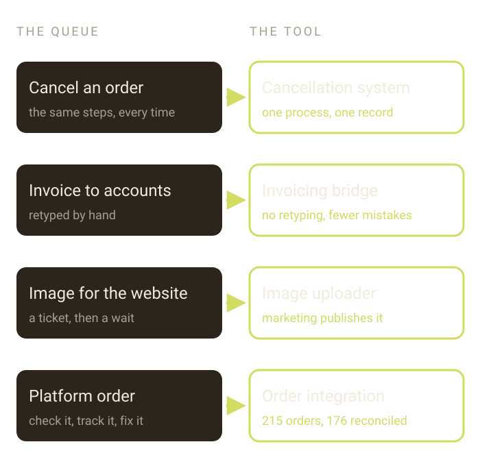
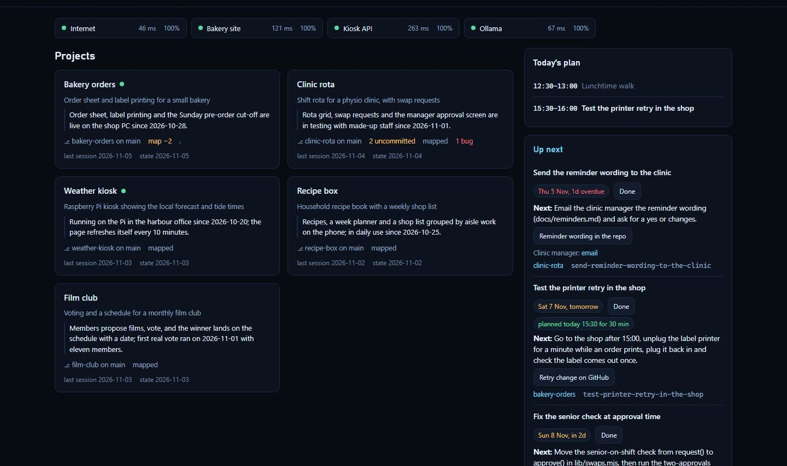
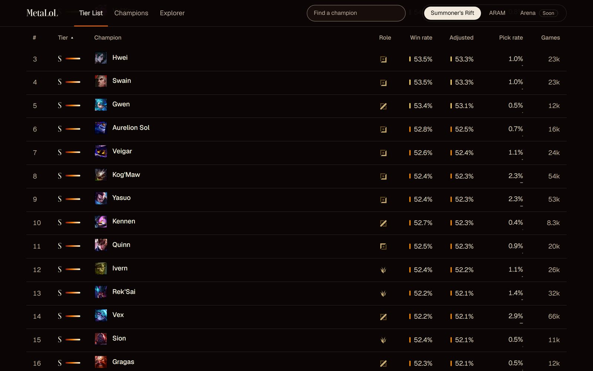

I build the tools a team is missing.
Mostly by directing Claude Code and testing what it makes. At my last job, operations at a UK vehicle-leasing broker, four things I built were still in daily use when I left.
Looking for a remote UK role in product, operations or AI tooling. Available now.
A Clifford attractor, drawn live on your graphics card. Move to bend it, click for another.
Work
Seven projects. Each opens a page with what I did, the stack and the skills.

Talent Radar
A sourcing tool for a recruiter friend. It finds engineers from their public work and says, in plain English, why they fit the job. Built with a partner; I own the product side, the screens and the privacy paperwork. The Sonar view above is a working demo on its page.
Private React, Go, Postgres

Back-office tools
Four internal tools for a UK vehicle-leasing broker, built on the job: cancellations, invoicing into the accounts software, marketing uploads, and an order integration that carried 215 orders. All still in use when I left.
In use Claude Code, internal tools

A harness for Claude Code
Everything I wired around Claude Code so it works like a colleague: it briefs each session on the project, blocks dangerous commands, reviews every commit for bugs, writes up the day, and takes instructions by voice.
Daily use Node, SQLite, Ollama

MetaLoL
A new front end for a public League of Legends stats site, sister of MetaTFT. Tier list, champion pages, a phone layout and tests. Waiting for the owner’s review.
On a branch React 19, TypeScript, Vite
Needle Drop
A keyboard DJ rhythm game with roguelike runs: left hand mixes, right hand beatmatches, every record switch scores like a card game. Design written, first slice being built.
In progress Godot 4.7, GDScript
Local models for Claude
Two small servers that hand long files to a model on my own graphics card and send back only the answer. Private data stays on the machine and Claude’s context stays small.
Running Node, MCP, Ollama
Fractal MCP
A render farm for maths art that Claude can call like a tool: ask for a fractal in a sentence, get the picture back from my graphics card. Every render on this page came out of it.
Running Node, Python, OpenCL
Lately
- Oct 2026 to now
- Talent Radar, with a partner, for a recruiter. Product, screens, the UK GDPR paperwork.
- Dec 2025 to Oct 2026
- Operations, UK vehicle-leasing broker. The internal ticket queue, order admin for nine salespeople, hands-on IT, and from August the front end of the new company website. Built the four tools above on the side.
- 2025 to now
- MetaLoL, contributor. Small fixes on the live site, then a front-end remake on a branch.
How I work with AI
I write the brief in plain words. Claude Code reads the code and proposes a plan, I say go, and I read and run every change before it lands.
Around that sits a harness I built: guards so the AI cannot read secrets or throw work away, a bot that reviews every commit, and write-ups so nothing is lost between days. Long files and private data go to a model on my own graphics card, not to the cloud.
The tools are new. The habits are old ones: write it down, test it against the real thing, keep it small enough to finish.
Commit review — harness repo
2026-10-23, 7 commits, medium depth
Score: 86/100
Findings (1)
[low] non-wrapping code items in .meta overflow, then html overflow-x: clip hides them — dashboard/public/style.css:60
Failure: a 50-character booking reference on a phone runs off screen; the end is unreadable and uncopyable.
Checked: every removed CSS variable and class traced; nothing still points at them.
Espresso
The site is named after my cat and coloured like her eyes. Black shorthair, yellow-green eyes, one white tuft.
Hire me
Remote, UK-based. Product, operations or AI tooling.
Email meCV on request. Available now.
Roles that fit: product operations, operations analyst, internal tools, AI tooling.
- Builds tools people use daily
- Four built on the job at my last employer, all still running when I left.
- Directs AI, with checks
- Every change is read and run before it lands. Private data never reaches a cloud model.
- Writes it down
- Briefs, data-protection paperwork, session write-ups. The next person can pick it up.
- Finishes
- 224 of 226 tickets closed in ten months, while building the tools on the side.